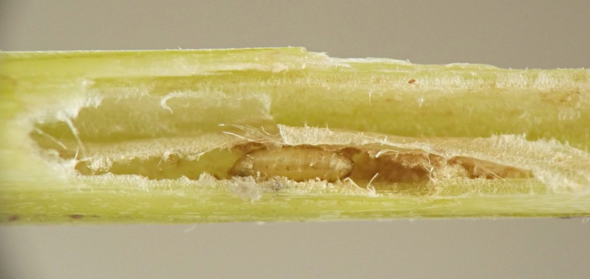
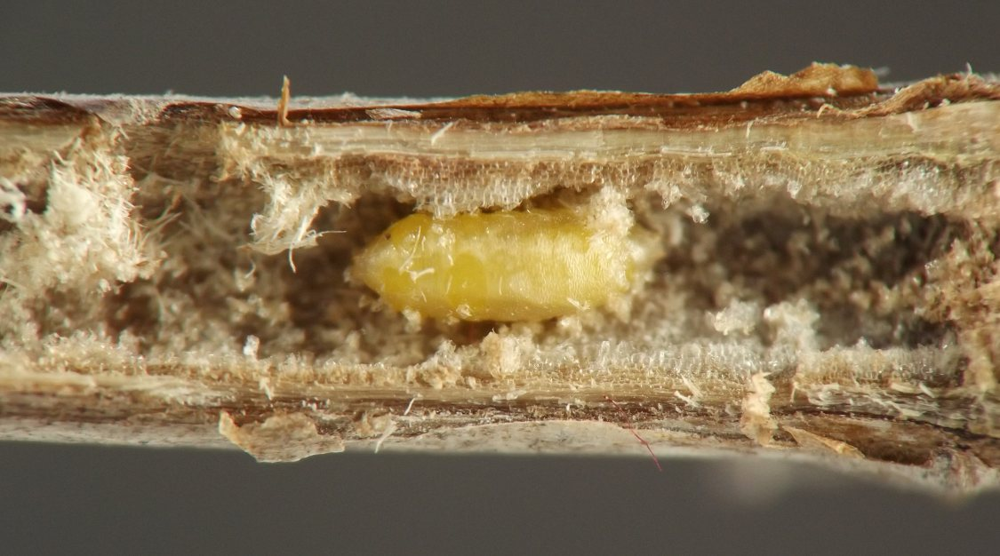
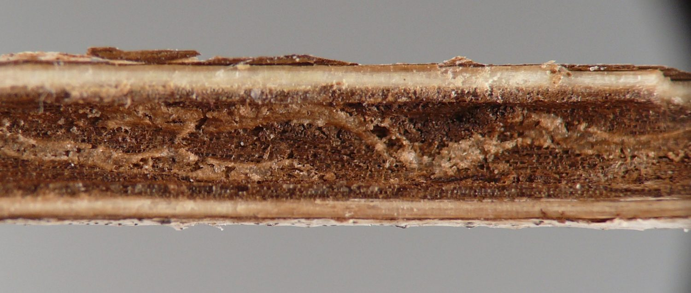
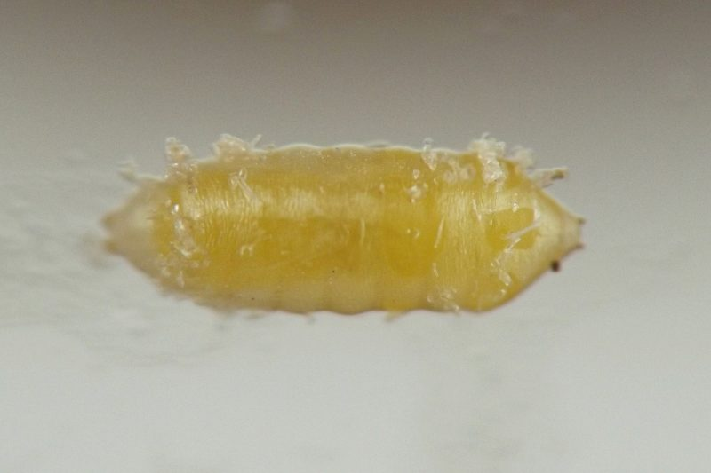
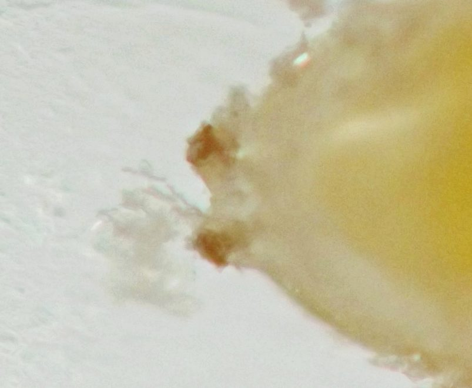
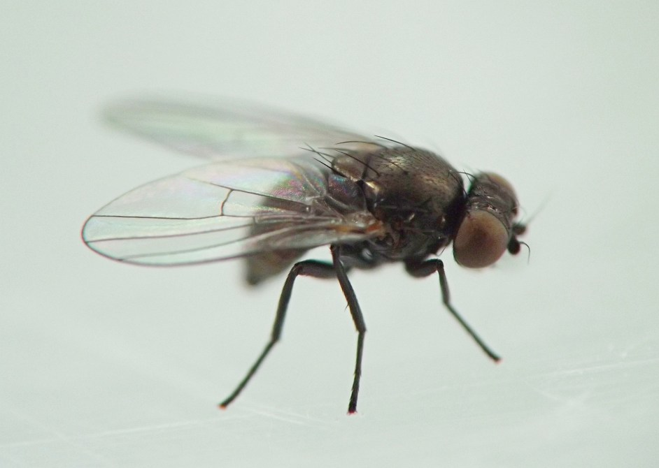
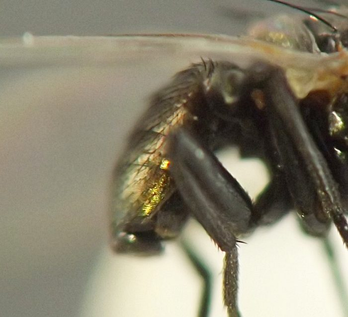
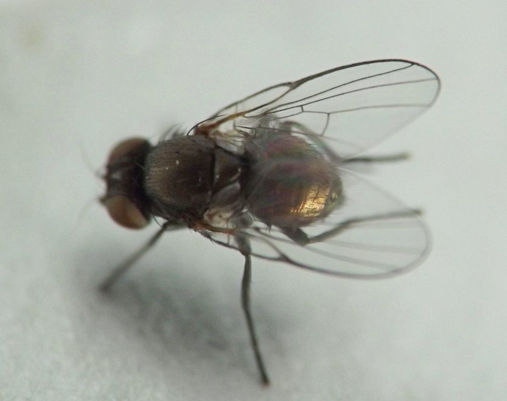

Stem borer (Diptera: Agromyzidae) in Monarda
| Record no.: | 0335 |
|---|---|
| Feeding guild: | Stem borer |
| Taxonomy: | Diptera: Agromyzidae: Melanagromyza sp. |
| Stages observed: | trace, larva, puparium, adult |
| Distribution observed: | IA |
| Hosts in Monarda: | M. fistulosa (bee balm, wild bergamot) |
I first came across puparia of this borer in dead stems of the host in winter 2021-2022. Adults emerged from these puparia in spring 2022. They were dark overall with greenish-bronze iridescence on the abdomen.
In 2023, I found a larva feeding in a stem on 1 August. The puparium (image 335-01) was formed in the stem by 22 August.
Finally, in winter 2025-2026 I found another example of this borer. I did not observe the puparium, but I noted that the larva's tunnel started low in the stem and moved upward, finishing in the middle portion of the stem. The earlier stretch of tunnel in the lower stem (image 335-03) consisted of a winding linear trail, about one seventh as wide as the stem diameter, that meandered through the dark brown layer of pith lining the stem interior. The trail was light brown in comparison to the darker color of unaffected pith, and its roof was slightly raised above the level of the unaffected pith, similar to a mole's tunnel in a lawn.
Puparia I photographed were straw-colored with lightly sclerotized posterior spiracular plates. A magnified image of the posterior spiracles of one puparium (image 335-05) shows that the spiracle plates lacked strong horns.

 Prev
Prev
{kind=link}
{kind=link}

{kind=link}

{kind=link}

{kind=link}

{kind=link}

{kind=link}

{kind=link}

Page created: March 26, 2026. Last update: none